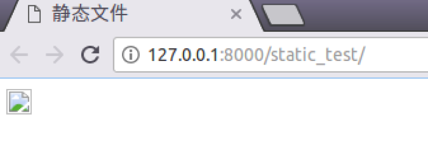
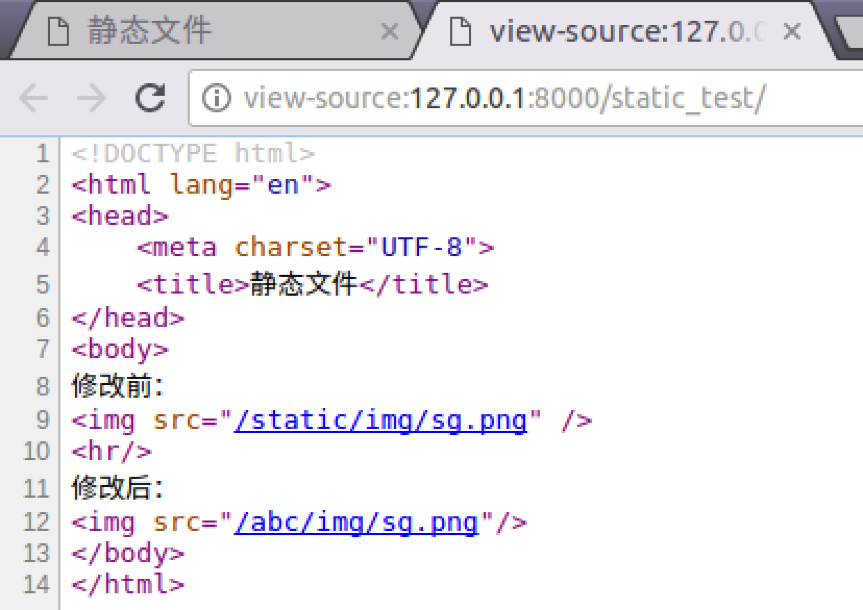
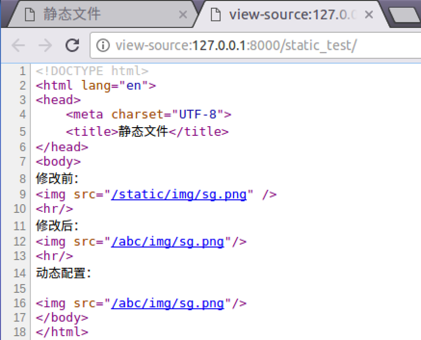

静态文件处理
项目中的CSS、图片、js都是静态文件。一般会将静态文件放到一个单独的目录中，以方便管理。在html页面中调用时，也需要指定静态文件的路径，Django中提供了一种解析的方式配置静态文件路径。静态文件可以放在项目根目录下，也可以放在应用的目录下，由于有些静态文件在项目中是通用的，所以推荐放在项目的根目录下，方便管理。
示例
1）在test5/settings.py文件中定义静态文件存放的物理目录。
STATIC_URL = '/static/'
STATICFILES_DIRS = [
os.path.join(BASE_DIR, 'static'),
]
2）在项目根目录下创建static目录，再创建img、css、js目录。
3）在booktest/views.py中定义视图static_test。
def static_test(request):
return render(request,'booktest/static_test.html')
4）在booktest/urls.py中配置url。
url(r'^static_test/$',views.static_test),
5）在templates/booktest/下创建static_test.html文件。
<html>
<head>
<title>静态文件</title>
</head>
<body>
<img src="/static/img/sg.png"/>
</body>
</html>
6）保存图片到static/img/目录下，名称为sg.png。
7）运行服务器，浏览效果如下图：

配置静态文件
Django提供了一种配置，可以在html页面中可以隐藏真实路径。
1）在test5/settings.py文件中修改STATIC_URL项。
# STATIC_URL = '/static/'
STATIC_URL = '/abc/'
2）刷新浏览器，图片找不到了，效果如下图：

3）修改templates/booktest/static_test.html如下：
<html>
<head>
<title>静态文件</title>
</head>
<body>
修改前：<img src="/static/img/sg.png"/>
<hr>
修改后：<img src="/abc/img/sg.png"/>
</body>
</html>
3）刷新浏览器，效果如下图：

4）查看网页源代码，发现可以网址和真实地址之间没有关系。

为了安全可以通过配置项隐藏真实图片路径，在模板中写成固定路径，后期维护太麻烦，可以使用static标签，根据配置项生成静态文件路径。
1）修改templates/booktest/static_test.html如下：
<html>
<head>
<title>静态文件</title>
</head>
<body>
修改前：<img src="/static/img/sg.png"/>
<hr>
修改后：<img src="/abc/img/sg.png"/>
<hr>
动态配置：
{%load static from staticfiles%}
<img src="{%static "img/sg.png" %}"/>
</body>
</html>
2）刷新浏览器，效果如下图：

查看网页源代码如下图：

说明：这种方案可以隐藏真实的静态文件路径，但是结合Nginx布署时，会将所有的静态文件都交给Nginx处理，而不用转到Django部分，所以这项配置就无效了。